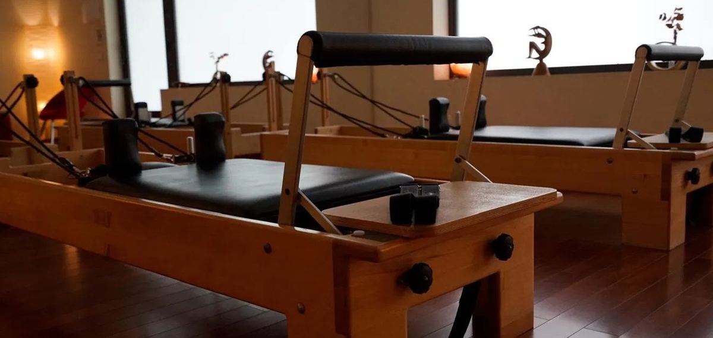
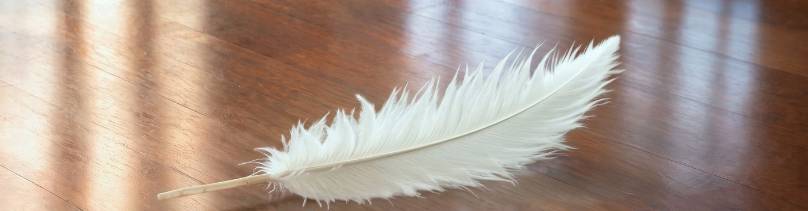
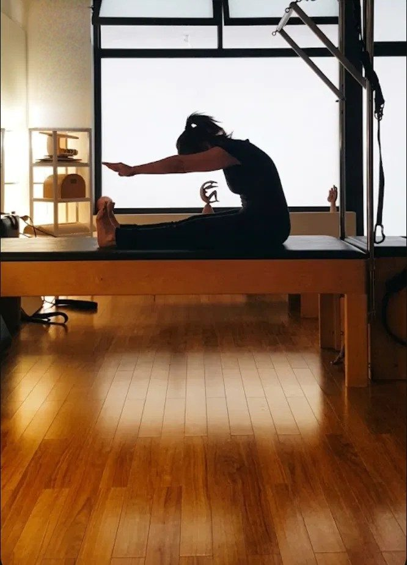

Curso 2026 — 2027
Las Caletillas · Candelaria · Tenerife
Algo sobre mi trayectoria profesional
Desde el año 2003 ofrezco una enseñanza personalizada de "PILATES" en mi Estudio de Tenerife (situado en las Caletillas - Candelaria) tras certificarme como Instructora por la Escuela "Polestar Pilates".
Imparto cursos y talleres de Eutonía desde que en 2004 me adentro en la experiencia de su pedagogía de la mano de Raymond Murcia. Tras años de profundización realizo el Pase que me certifica como Eutonista por la "Federación Internacional de Eutonía".
Además incorporo a mi didáctica los conocimientos adquiridos durante años de formación en Meditación, Yoga, Fasciaterapia, Shiatsu, Bioenergética y Aerobowspring, origen de lo que soy hoy a nivel personal y profesional después de más de treinta años de estudio, práctica e investigación.

Eutonía Aplicada
La Eutonía es el principal referente desde el que realizo mi trabajo. Y sin perder los principios que la hacen única le doy un enfoque personal, al que llamo:
«Eutonía Aplicada», una enseñanza integradora que aborda el autoconocimiento de la persona a través del movimiento, el despertar de la sensibilidad y la toma de consciencia. Fundamental para un aprendizaje transformador y duradero.

En modalidad regular
Individual
52€
por sesión
Compartida
32€
por sesión
En ambos casos la mensualidad a pagar está en relación a las semanas que tenga cada mes. Variando generalmente entre tres y cinco semanas.
Para saber el importe a abonar ese mes deberá multiplicar el importe del precio de las sesiones a la semana que va a coger por las semanas del mes en curso.
La duración de las sesiones es de 55 minutos.
Modalidad regular
En esta modalidad no se podrá hacer cambio de hora de la sesión si no avisa con 48h de antelación. Estando siempre sujeto para dicho cambio a la disponibilidad de la agenda del Estudio dentro del mes en curso, y no pudiendo pasarse a otro mes. En ningún caso se devolverá el importe de la sesión a la que no asista. A cambio el Estudio se compromete a reservarle el día y la hora que usted haya concertado para todo el mes.
En el caso de que no pueda asistir a la totalidad del mes el precio será el de sesiones sueltas (véase esa opción en "Sesiones no Regulares"). No pudiendo acogerse más de un mes a no venir en su totalidad. En este caso perderá su día y hora y volverá a estar sujeto a la disponibilidad de la agenda del Estudio. (En ambos casos el importe se pagará al inicio de cada mes)
Si por motivos de fuerza mayor el Estudio no pudiera dar las sesiones se le devolverá el importe de las no recibidas o podrá recuperarlas en los meses siguientes si así lo desea.
También disponible
Individual
58€
por sesión
Compartida
38€
por sesión

Curso 2026 — 2027
Las Caletillas · Candelaria · Tenerife